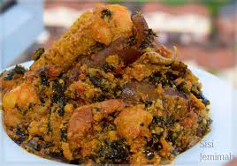

Welcome to my Food App Site
Food Photo App
I am Augustine Akubue from Anambra state, Nigeria.
I love Egusi soup very well because of how it feels eating it with a well pounded Cassava(fufu).
I was born in Ogidi, in Anambra State. attended Holy Child Primary School Nkpor. also attended St. Mary's High School, Ifitedunu. Went to Nnamdi Azikiwe University,Awka. I have worked for Iron Resources Limited Lagos,Nigeria as an Inventory Manager.